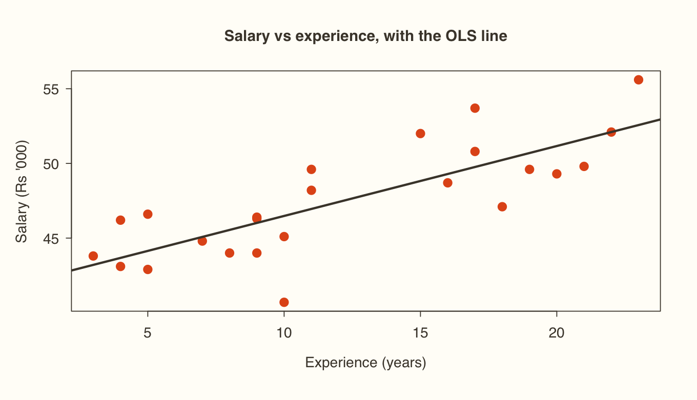
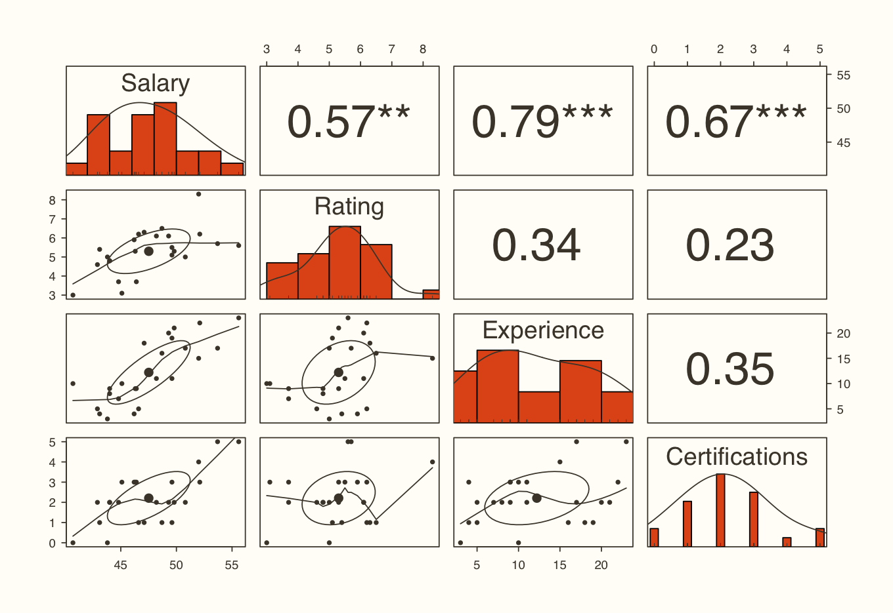
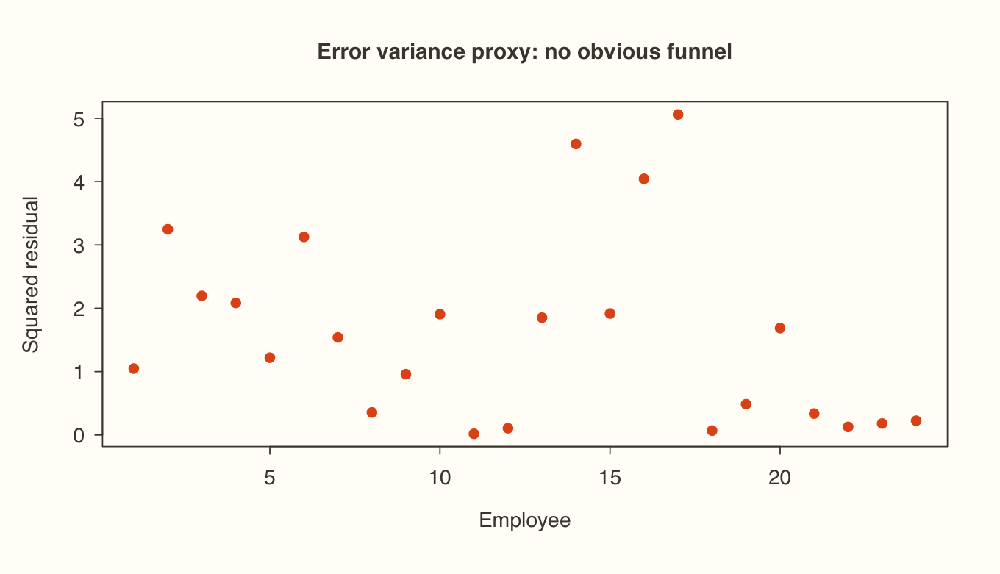
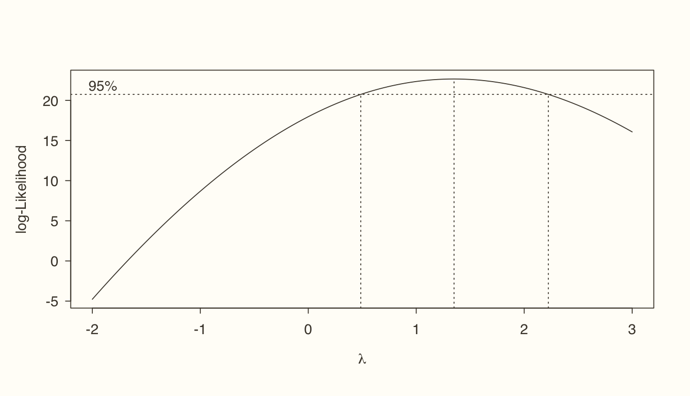
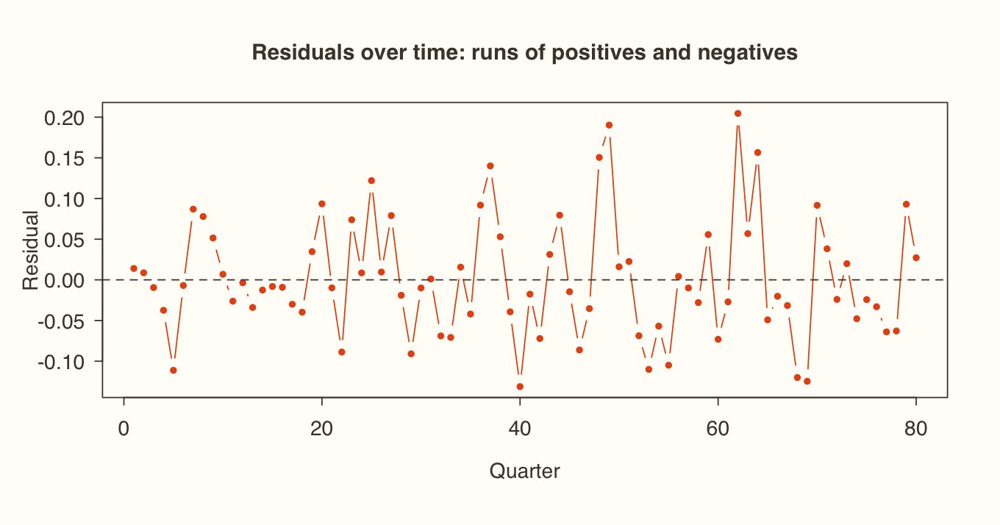

Session 3.1
Introduction to predictive analytics Predictive modelling starts with regression , a term that goes back to Francis Galton's "regression to the mean". The idea is to explain changes in one variable (Y) through changes in others (X). Both must actually vary: if either one is constant, there's nothing to explain.
Role Other names Dependent variable (Y) Explained, response, regressand, outcome, endogenous Independent variable (X) Explanatory, predictor, regressor, covariate, exogenous Control variable Included to hold other effects constant, not of direct interest
The linear model Y = α + βX + ε
α (intercept) : the value of Y when X = 0. For example, what a household spends with zero income.β (slope) : the change in Y for a one-unit change in X. If β = 0.8, each extra rupee of income adds 80 paise of spending. A negative β means the two move in opposite directions.ε (error) : actual minus predicted. No relationship is perfect, and ordinary least squares (OLS) picks the line that minimises the squared errors.When the classical assumptions hold (Session 3.3), OLS is BLUE : the Best Linear Unbiased Estimator.
Which model fits which data? Y (dependent) X (independent) Model Continuous Continuous Simple or multiple linear regression Continuous Categorical Dummy-variable regression Categorical Continuous Logistic regression Categorical Categorical Classification techniques
Session 3.2
Simple and multiple regression in R The data is cross-sectional: 24 employees, each with a monthly salary (in Rs '000s), a performance rating out of 10, years of experience and number of certifications.
R Copy
url <- "https://xploreai.co.in/courses/fda-r/data/"
salary <- read.csv(paste0(url, "salary.csv"))
str(salary)Console output
'data.frame': 24 obs. of 5 variables:
$ Employee_ID : chr "E01" "E02" "E03" "E04" ...
$ Salary : num 55.6 47.1 49.6 44 46.3 44 49.3 45.1 53.7 40.7 ...
$ Rating : num 5.6 6.3 5.1 4.8 5.3 4.8 6.1 3.1 5.7 3 ...
$ Experience : int 23 18 19 8 9 9 20 10 17 10 ...
$ Certifications: int 5 1 1 2 3 2 2 3 5 0 ... Simple regression: Salary on Experience lm() fits a linear model. The ~ reads as "is regressed on".
R Copy
model3 <- lm(Salary ~ Experience, data = salary)
summary(model3)Console output
Call:
lm(formula = Salary ~ Experience, data = salary)
Residuals:
Min 1Q Median 3Q Max
-5.78 -1.42 -0.14 1.55 3.94
Coefficients:
Estimate Std. Error t value Pr(>|t|)
(Intercept) 41.7997 1.0559 39.59 < 2e-16 ***
Experience 0.4683 0.0772 6.06 0.0000042 ***
---
Signif. codes: 0 ‘***’ 0.001 ‘**’ 0.01 ‘*’ 0.05 ‘.’ 0.1 ‘ ’ 1
Residual standard error: 2.33 on 22 degrees of freedom
Multiple R-squared: 0.626, Adjusted R-squared: 0.609
F-statistic: 36.8 on 1 and 22 DF, p-value: 0.0000042 How to read it Read every regression in three steps .
1. R² : what share of the variation in salary does experience explain? Higher is better, but a very high R² on time-series data can be spurious.
2. F-test : H₀ says every slope is zero. If its p-value is below 0.05, reject H₀: the model is useful overall.
3. Coefficients : check each p-value (or the stars: * means p < 0.001), then read the sign and size. Here every extra year of experience adds the Experience estimate to salary, measured in Rs '000.
Using the equation to predict R Copy
coef(model3)
coef(model3)[1] + coef(model3)[2] * 20 # by hand: someone with 20 years
predict(model3, newdata = data.frame(Experience = c(5, 10, 20)))Console output
(Intercept) Experience
41.79973 0.46828
(Intercept)
51.165
1 2 3
44.141 46.483 51.165 R Copy
rust <- "#E2571B"; espresso <- "#4A4238"
plot(salary$Experience, salary$Salary, pch = 19, col = rust, cex = 1.3,
xlab = "Experience (years)", ylab = "Salary (Rs '000)", main = "Salary vs experience, with the OLS line")
abline(model3, col = espresso, lwd = 2.5)Plot output

Multiple regression Add rating and certifications to the model:
R Copy
model4 <- lm(Salary ~ Rating + Experience + Certifications, data = salary)
summary(model4)Console output
Call:
lm(formula = Salary ~ Rating + Experience + Certifications, data = salary)
Residuals:
Min 1Q Median 3Q Max
-1.802 -1.256 -0.231 0.991 2.249
Coefficients:
Estimate Std. Error t value Pr(>|t|)
(Intercept) 36.0624 1.3542 26.63 < 2e-16 ***
Rating 0.9240 0.2649 3.49 0.0023 **
Experience 0.3247 0.0511 6.36 0.0000033 ***
Certifications 1.1744 0.2356 4.99 0.0000711 ***
---
Signif. codes: 0 ‘***’ 0.001 ‘**’ 0.01 ‘*’ 0.05 ‘.’ 0.1 ‘ ’ 1
Residual standard error: 1.39 on 20 degrees of freedom
Multiple R-squared: 0.88, Adjusted R-squared: 0.862
F-statistic: 48.7 on 3 and 20 DF, p-value: 0.00000000223 How to read it With several regressors, use Adjusted R² . It penalises every extra variable, so you can't inflate it by adding noise (the principle of parsimony). Notice that the experience coefficient has shrunk compared with model 3. Some of what experience was "explaining" really belonged to rating and certifications.
Try it Fit lm(Salary ~ Rating, data = salary) and lm(Salary ~ Certifications, data = salary) yourself and interpret them with the same three steps.
Session 3.3
The assumptions of the classical linear regression model OLS is only BLUE if seven assumptions hold:
# Assumption What breaks if it fails How to check 1 Linear in parameters (X² or 1/X is fine, β² is not) Wrong model form Theory, residual plots 2 Correctly specified, with no relevant variable left out Biased coefficients Theory, RESET test 3 No (perfect) multicollinearity among the X's Unstable, inflated standard errors Correlations, VIF 4 Errors have zero mean: E(ε) = 0 Biased intercept mean(resid())5 Homoskedasticity : constant error varianceWrong standard errors and p-values Breusch–Pagan 6 Errors are normally distributed Unreliable t and F tests in small samples Histogram, Shapiro–Wilk 7 No autocorrelation of errorsOver-confident p-values (time series) Durbin–Watson
The idea Cross-sectional data mostly runs into problems with assumptions 3 and 5 . Time-series data adds 7 : this month's error tends to look like last month's error, because of trends, seasons and cycles.
Session 3.4
Testing the assumptions: cross-sectional data Multicollinearity: correlations and VIF R Copy
library(psych)
pairs.panels(salary[, -1], hist.col = rust, col = espresso, stars = TRUE)Plot output

The variance inflation factor shows how much each coefficient's variance is inflated by its correlation with the other X's.
R shown, not run here Copy
install.packages(c("car", "lmtest"))R Copy
library(car)
vif(model4)Console output
Rating Experience Certifications
1.1501 1.2366 1.1550 How to read it The usual rule of thumb: VIF > 10 is serious, so drop the variable. 5–10 calls for judgement. Below 5 (stricter authors say below 3) is no problem. All three values here are close to 1, so the regressors are not collinear.
Zero mean of errors R Copy
error_model4 <- resid(model4)
mean(error_model4) # effectively zeroConsole output
[1] 7.6328e-17 Homoskedasticity: the Breusch–Pagan test Squared residuals stand in for the error variance. Plot them first, then test.
R Copy
plot(error_model4^2, pch = 19, col = rust, ylab = "Squared residual", xlab = "Employee",
main = "Error variance proxy: no obvious funnel")
library(lmtest)
bptest(model4)Console output
studentized Breusch-Pagan test
data: model4
BP = 3.98, df = 3, p-value = 0.26 Plot output

How to read it H₀: the errors are homoskedastic . If p > 0.05, fail to reject, and the assumption holds. If p < 0.05, the variance changes across observations, so transform Y (log or Box-Cox) or use robust standard errors.
Session 3.5
Testing the assumptions: time-series data The data is 80 quarters (2006–2025) of one firm's financial ratios. The question is what drives firm value, measured by Tobin's Q .
R Copy
CF_data <- read.csv(paste0(url, "CF_data.csv"))
dim(CF_data)
model_CF <- lm(Firm_Value_TobinsQ ~ ROA + Leverage_Ratio + Debt_Equity_Ratio + Interest_Coverage +
Capital_Intensity + Current_Ratio + Policy_Interest_Rate + Sales_Growth, data = CF_data)
round(vif(model_CF), 2)Console output
[1] 80 17
ROA Leverage_Ratio Debt_Equity_Ratio Interest_Coverage
18.08 73.89 56.53 39.69
Capital_Intensity Current_Ratio Policy_Interest_Rate Sales_Growth
1.78 1.27 8.48 1.67 How to read it Leverage ratio and debt-to-equity are almost the same thing measured two ways, so their VIFs explode well past 10. Interest coverage, which is built from leverage, is inflated too. Drop the two leverage measures and refit.
R Copy
model_CF2 <- lm(Firm_Value_TobinsQ ~ ROA + Interest_Coverage + Capital_Intensity +
Current_Ratio + Policy_Interest_Rate + Sales_Growth, data = CF_data)
round(vif(model_CF2), 2)
summary(model_CF2)Console output
ROA Interest_Coverage Capital_Intensity Current_Ratio
3.96 5.28 1.70 1.12
Policy_Interest_Rate Sales_Growth
2.42 1.66
Call:
lm(formula = Firm_Value_TobinsQ ~ ROA + Interest_Coverage + Capital_Intensity +
Current_Ratio + Policy_Interest_Rate + Sales_Growth, data = CF_data)
Residuals:
Min 1Q Median 3Q Max
-0.13118 -0.04031 -0.00989 0.03556 0.20456
Coefficients:
Estimate Std. Error t value Pr(>|t|)
(Intercept) -0.22957 0.26125 -0.88 0.38242
ROA 12.81379 3.34316 3.83 0.00027 ***
Interest_Coverage 0.04482 0.01903 2.36 0.02118 *
Capital_Intensity 0.06135 0.04277 1.43 0.15577
Current_Ratio 0.28848 0.08396 3.44 0.00098 ***
Policy_Interest_Rate -0.00909 0.01212 -0.75 0.45576
Sales_Growth 0.78196 0.12624 6.19 0.000000031 ***
---
Signif. codes: 0 ‘***’ 0.001 ‘**’ 0.01 ‘*’ 0.05 ‘.’ 0.1 ‘ ’ 1
Residual standard error: 0.0747 on 73 degrees of freedom
Multiple R-squared: 0.774, Adjusted R-squared: 0.756
F-statistic: 41.7 on 6 and 73 DF, p-value: <2e-16 How to read it Every VIF is now below 10. Interest coverage sits just above 5, in the judgement zone, and it's significant, so keep it. Sales growth, ROA and the current ratio drive firm value most clearly here.
Error mean and heteroskedasticity R Copy
mean(resid(model_CF2))
bptest(model_CF2)Console output
[1] -1.5613e-18
studentized Breusch-Pagan test
data: model_CF2
BP = 8.86, df = 6, p-value = 0.18 Box-Cox: what transformation would help? Box-Cox searches for the power λ that makes the errors best behaved. Read off the λ at the peak: 0 means take the log, 0.5 the square root, 1 means no transformation, and −1 means 1/Y .
R Copy
library(MASS)
bc <- boxcox(formula(model_CF2), data = CF_data, lambda = seq(-2, 3, 0.05))
bc$x[which.max(bc$y)] # best lambdaPlot output

How to read it The peak is at about 1.35, but the 95% interval (the dotted lines) runs from about 0.5 to 2.2 and includes 1 . No transformation is needed, which agrees with the Breusch–Pagan result.
Autocorrelation: the Durbin–Watson test R Copy
durbinWatsonTest(model_CF2)Console output
lag Autocorrelation D-W Statistic p-value
1 0.27145 1.4548 0.004
Alternative hypothesis: rho != 0 R Copy
plot(resid(model_CF2), type = "b", pch = 19, cex = .6, col = rust,
ylab = "Residual", xlab = "Quarter", main = "Residuals over time: runs of positives and negatives")
abline(h = 0, col = espresso, lty = 2)Plot output

How to read it DW ≈ 2 means no autocorrelation. Well below 2 means positive autocorrelation and well above 2 means negative. Here DW is clearly below 2 and its p-value is under 0.05, so the errors are autocorrelated. You can see it in the chart: the residuals come in streaks instead of bouncing randomly around zero.
Watch out This is the core problem with running OLS on time series. The fix is to test each series for stationarity first (Module 2), transform or difference them, and only then estimate. Module 4 builds models designed for exactly this.